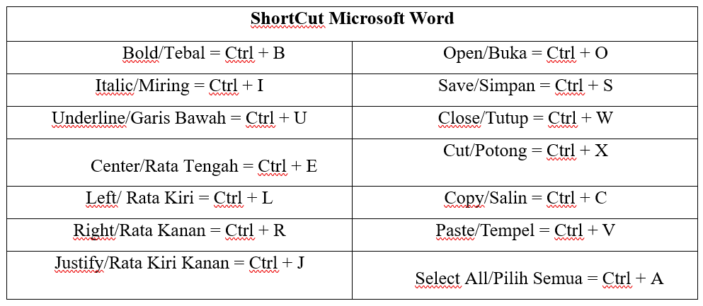

Microsoft Word
ditulis oleh salsa-ade-nayla. pada 06 Desember 2023
Microsoft Word adalah perangkat lunak yang di gunakan untuk pengolahan teks, dokumen, laporan dll.
Drop Cap
Drop cap adalah huruf pertama pada paragraf yang memiliki ukuran yang sangat besar dan lebih dari huruf lainnya. Fungsi drop cap adalah agar teks lebih menarik sehingga bisa memancing perhatian para pembaca tanpa membuat pembaca tersebut merasa terganggu.
Dengan menggunakan fitur Drop cap, tulisan kita akan terlihat seperti tulisan yang ada di majalah atau di koran dan terlihat professional. Namun, dokumen resmi seperti skripsi, makalah atau karya ilmiah lainnya tidak menggunakan drop cap pada penulisan dokumennya.
- Pada Tab Insert, pilih Drop Cap.
- Pilih style Drop Cap yang diinginkan.
Pembuatan Makalah
Berikut adalah struktur makalah yang benar :
- COVER
- KATA PENGANTAR
- DAFTAR ISI
- DAFTAR GAMBAR (JIKA ADA)
- DAFTAR TABEL (JIKA ADA)
- BAB 1 : PENDAHULUAN
- BAB 2 : PEMBAHASAN
- BAB 3 : KESIMPULAN
- DAFTAR PUSTAKA
Daftar Isi
- Pertama, siapkan dahulu halaman baru di tab Insert, pilih Blank Page.

- Gunakan Heading 1 pada tab Styles untuk Judul.
- Gunakan Heading 2 pada tab Styles untuk Sub Judul.
- Klik kanan pada menu Heading yang dipilih lalu pilih Modify
- Font : Times New Roman.
- Bold.
- Size : 16.
- Centered.
- Add to the styles gallery.
Daftar Gambar

- Buka tab Insert, pilih pictures, pilih This Device.
- Masukan gambar yang di inginkan.
- Klik kanan pada gambar, pilih Insert Caption.
- Beri label Gambar.
- Tulis caption yang di inginkan.
- Buka tab Reference, pilih Insert Table of Figures.
Daftar Tabel
Memberi Caption Tabel
- Blok table.
- Klik kanan pada tabel, pilih Insert Caption.
- Tulis caption gambar yang di inginkan.
Daftar Tabel Otomatis
- Buka tab Reference, pilih Insert Table of Figures.
Mail Merge
Mail Merge adalah suatu fungsi yang digunakan untuk menghasilkan beberapa surat, label, amplop, tag nama, dan lainnya menggunakan informasi yang disimpan dalam daftar, database, atau spreadsheet.

- Pilih tipe dokumen yang akan di buat, lalu next.
- Pada Select starting document, pilih Use the current document, lalu next.
- Pada Select recipients, pilih Type a new list, lalu Create.

- Setelah selesai mengisikan record maka akan terbuat data baru yaitu *.mdb
- Pada Mail Merge Recipients klik OK.
- Pada tab Mailings, pilih Insert Merge Field, kemudian pilih Field yang di butuhkan.
- Untuk menampilkan hasil, pilih Review Result.
- Jika telah selesai pilih Finish & Merge.